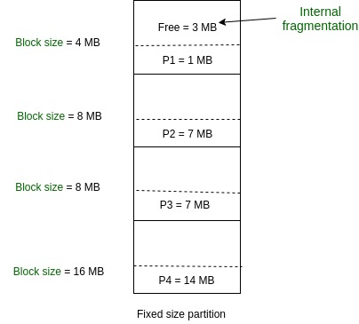

Memory Fragment Allocation Algorithms
MFT(Multi-programming with fixed partitioning)
Multi-programming with fixed partitioning is a contiguous memory management technique in which the main memory is divided into fixed sized partitions which can be of equal or unequal size. Whenever we have to allocate a process memory then a free partition that is big enough to hold the process is found. Then the memory is allocated to the process. If there is no free space available then the process waits in the queue to be allocated memory. It is one of the most oldest memory management technique which is easy to implement
MVT(Multi-programming with variable partitions)
Multi-programming with variable partitioning is a contiguous memory management technique in which the main memory is not divided into partitions and the process is allocated a chunk of free memory that is big enough for it to fit. The space which is left is considered as the free space which can be further used by other processes. It also provides the concept of compaction. In compaction the spaces that are free and the spaces which not allocated to the process are combined and single large memory space is made.